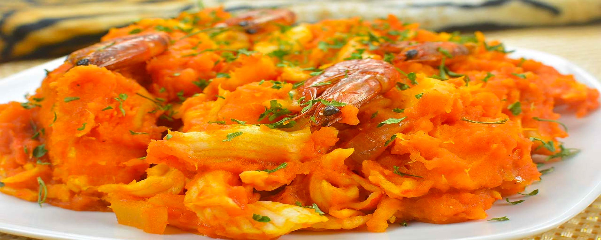

How to Prepare Nigerian Yam Porridge
Ingredient
- 2 medium-sized yams, peeled and cut into bite-sized cubes
- 1 onion, chopped
- 2-3 cloves of garlic, minced
- 1 red bell pepper, chopped
- 1-2 scotch bonnet peppers (habanero peppers), chopped (optional)
- 1 cup of palm oil
- 1 tablespoon of ground crayfish
- 2 Maggi seasoning cubes (or any other bouillon cube)
- 1 teaspoon of dried thyme
- Salt to taste
- 4 cups of water
Instructions
- Heat the palm oil in a large pot over medium heat.
- Add the chopped onions and sauté for 2-3 minutes until translucent.
- Add the minced garlic, chopped red bell pepper, and scotch bonnet peppers (if using), and sauté for another 2-3 minutes until fragrant.
- Add the yam cubes to the pot, and stir to combine with the onions and peppers.
- Add the ground crayfish, Maggi seasoning cubes, dried thyme, and salt to taste, and stir to combine.
- Add the water to the pot, and bring the mixture to a boil.
- Reduce the heat to low, cover the pot, and simmer for 20-25 minutes, or until the yam is tender.
- Stir occasionally to prevent the yam from sticking to the bottom of the pot.
- Once the yam is cooked, remove from heat and serve hot with your favorite side dish.